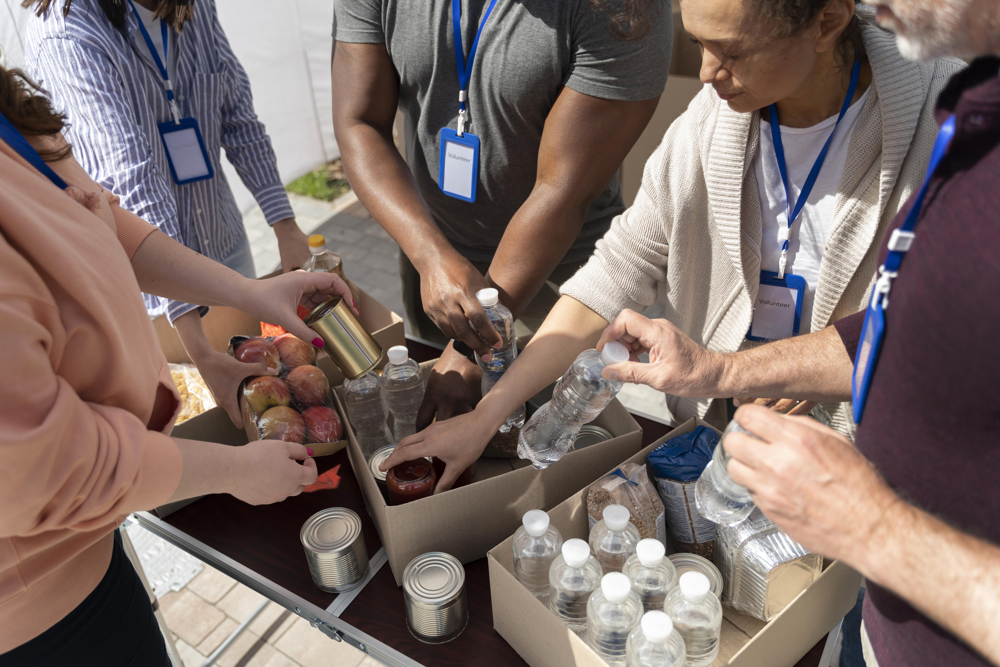
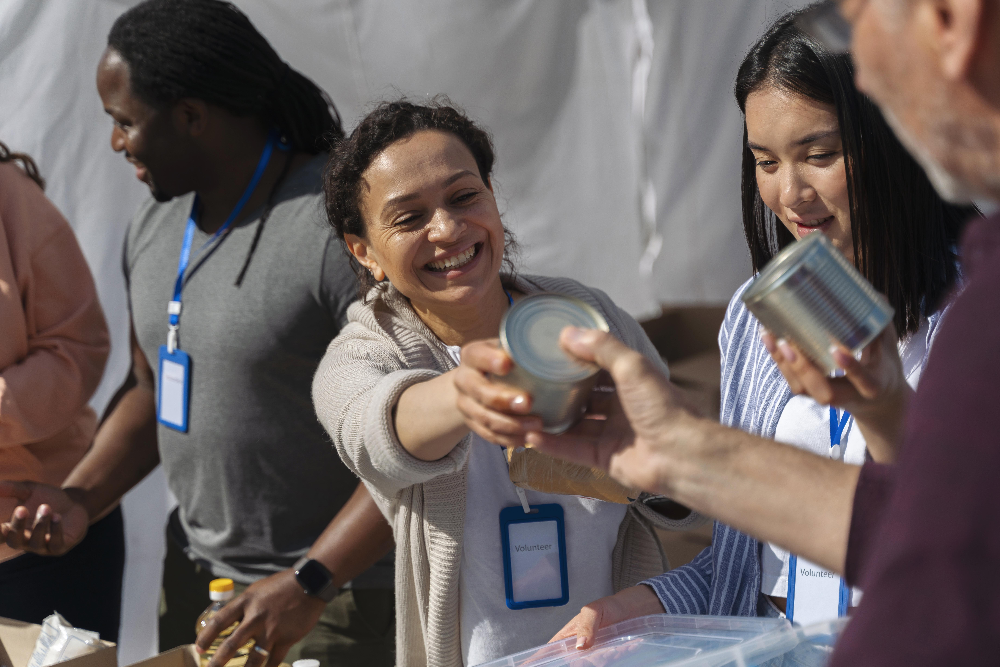
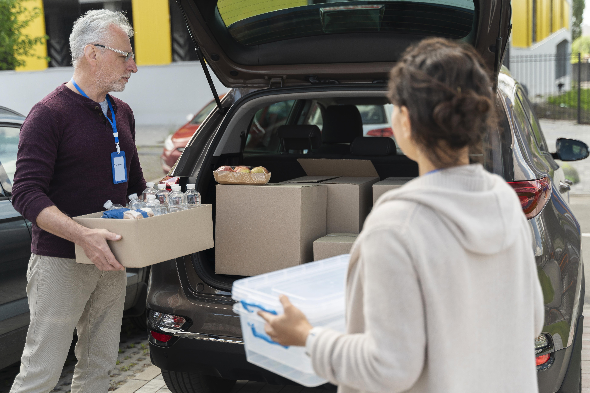

Conheça algumas das iniciativas desenvolvidas pela nossa organização para apoiar a comunidade.

Realizamos ações comunitárias com voluntários para apoiar pessoas em situação de vulnerabilidade.

Organizamos campanhas de arrecadação e distribuição de alimentos para famílias que precisam de apoio.

Nossas campanhas mobilizam voluntários e doadores para levar recursos essenciais à comunidade.